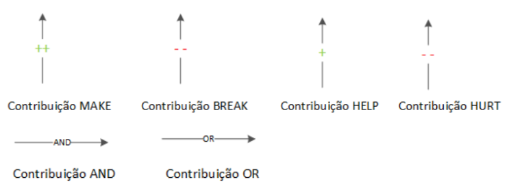
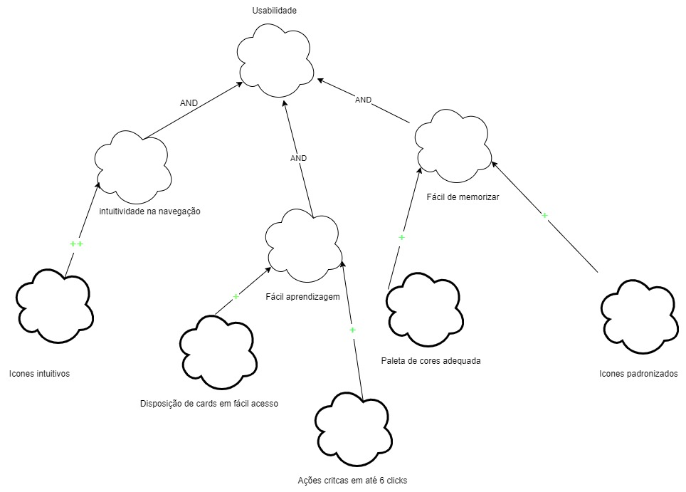
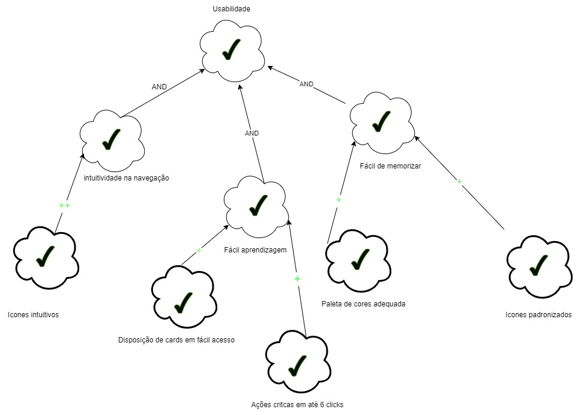
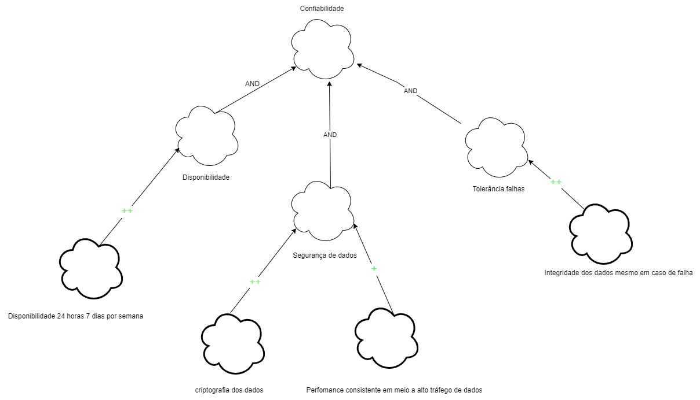
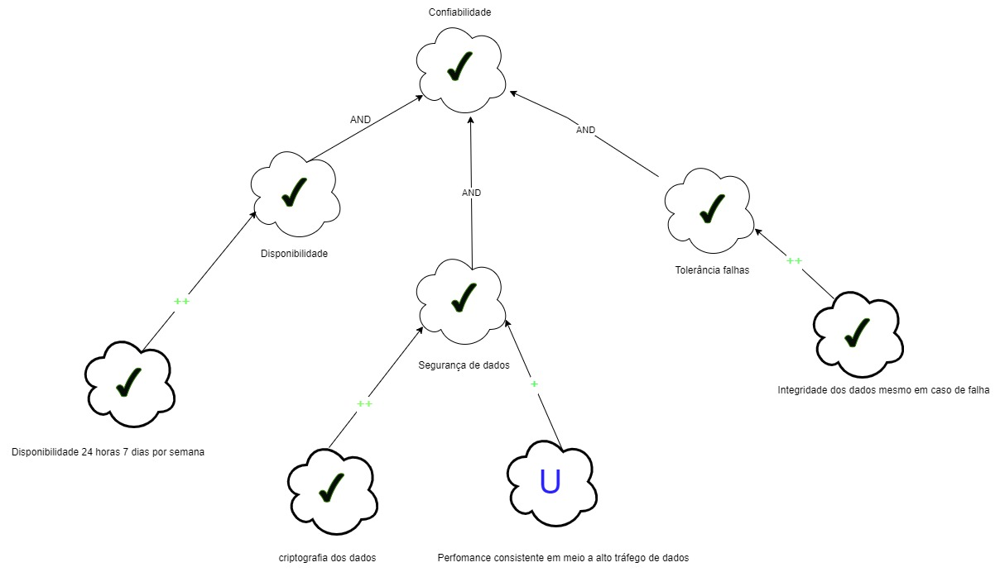
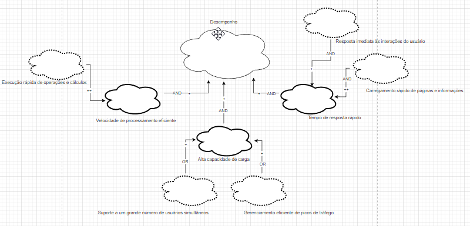
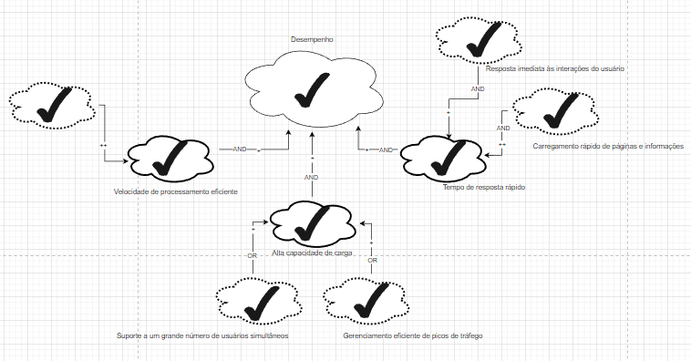
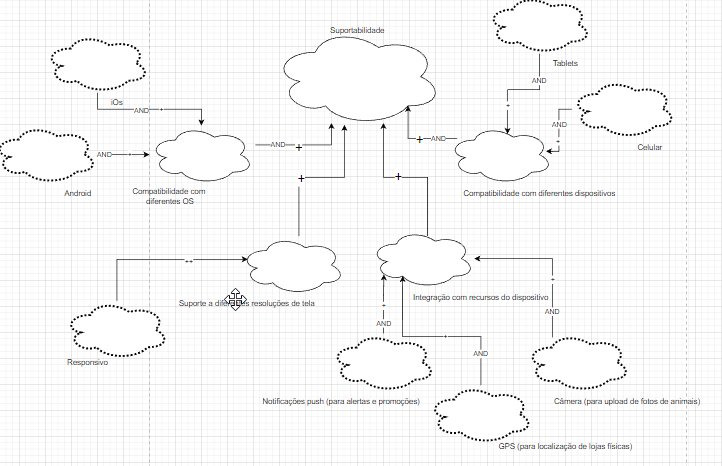
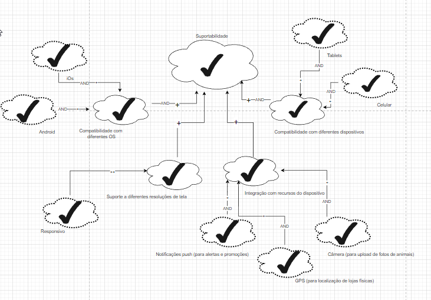

NFR Framework
1. Introdução
O NFR Framework, sigla para Non-Functional Requirements Framework, é uma abordagem estruturada para a gestão e análise de requisitos não funcionais em projetos de desenvolvimento de software. Requisitos não funcionais são critérios que descrevem as características do sistema que não estão diretamente relacionadas com sua funcionalidade, mas sim com sua qualidade, desempenho, segurança, usabilidade e outros aspectos que afetam sua eficácia e eficiência. Ao utilizar o NFR Framework, os profissionais de desenvolvimento de software podem melhorar a compreensão e a especificação dos requisitos não funcionais, bem como garantir que esses requisitos sejam levados em consideração ao longo do ciclo de vida do projeto. Isso ajuda a evitar problemas e retrabalhos futuros, além de aumentar a qualidade e a satisfação dos usuários finais.
2. Metodologia
Os diagramas SIG (softgoal interdependency Graph) que serão representados adiante, foram elaborados a partir dos requisitos não funcionais já apresentados anteriormente no documento da Especificação Suplementar.
Existem três tipos de softgoals: Softgoals NFR, Softgoals de Operacionalização e Softgoals de Afirmação. Estes são descritos a seguir:
-
Softgoals NFR: representam os Requisitos Não- Funcionais e podem estar inter-relacionados, organizados em catálogos e apresentados de forma hierárquica no desenvolvimento do projeto.
-
Softgoals de Operacionalização: representam soluções de implementação para satisfazer softgoals NFR ou outros softgoals de operacionalização. Essas soluções incluem operações, processos, representações de dados, estruturações e restrições no sistema alvo para atender às necessidades indicadas pelos softgoals NFR e de operacionalização.
-
Softgoals de Afirmação: permitem que as características do domínio (como prioridades e carga de trabalho) sejam consideradas e devidamente refletidas no processo de tomada de decisão. Eles servem como justificativa para apoiar ou negar a forma como os softgoals são priorizados, refinados e os componentes são selecionados. Os softgoals de afirmação fornecem as razões para as decisões de desenvolvimento, facilitando a revisão, a justificativa e a mudança do sistema, bem como o aprimoramento da rastreabilidade

Figura 1: representação Softgoals
Fonte: SILVA, Reinaldo Antônio da. NFR4ES: Um Catálogo de Requisitos Não-Funcionais para Sistemas Embarcados, 2019
No NFR framework é possível a utilização de diversos tipos de contribuições que descrevem como a satisfação ou não de um softgoal descendente contribui para a satisfação do softgoal ascendente. A seguir apresentamos os tipos de contribuição utilizadas pelo framework.

Figura 2: Tipos de contribuição
Fonte: SILVA, Reinaldo Antônio da. NFR4ES: Um Catálogo de Requisitos Não-Funcionais para Sistemas Embarcados, 2019
O procedimento de avaliação determina o grau que os requisitos não funcionais são satisfeitos por um conjunto de decisões. Dessa forma, o procedimento de avaliação determina se cada softgoal ou interdependência do SIG foi suficientemente satisfeito. Para isso, são atribuídos rótulos para os softgoals. Os tipos de rótulos utilizados são: satisfeito, fracamente satisfeito, negado, fracamente negado, conflitante, indeterminado. Esses rótulos são ilustrados na figura a seguir.

Figura 3: Tipos de rótulos
Fonte: SILVA, Reinaldo Antônio da. NFR4ES: Um Catálogo de Requisitos Não-Funcionais para Sistemas Embarcados, 2019
Cartões de especificação
As priorizações foram indicadas com base no artefato de Priorização, mais especificamente na priorização por escala de 3 níveis.
| n° requisito: RNF01 | Classificação: Confiabilidade |
|---|---|
| Descrição: O sistema deve ser manter seguro as informações do usuário criptografando dados sensíveis. | |
| Justificativa: A segurança de dados de um usuário é de extrema importância para qualquer software, ainda mais quando falamos de dados sensíveis | |
| Origem: LGPD (Lei geral de proteção dos dados) | |
| Critério de Aceitação: Ao trafegar dados na rede os dados do usuário devem estar criptogrados e inacessíveis a terceiros | |
| Dependências: nenhum | |
| Prioridade: Alta prioridade | |
| Conflitos: nenhum | |
| História: 05/07/2023 |
Especificação RNF01
Fonte: Autores, 2023
| n° requisito: RNF02 | Classificação: Suportabilidade |
|---|---|
| Descrição: O sistema deve estar disponível para os sistemas Android e iOS. | |
| Justificativa: O aplicativo deve estar disponivel no maior número de dispositivos possíveis | |
| Origem: projetista do software | |
| Critério de Aceitação: estar disponivel em ambos os sistemas operacionais: Android e IOS | |
| Dependências: nenhum | |
| Prioridade: Alta prioridade | |
| Conflitos: nenhum | |
| História: 05/07/2023 |
Especificação RNF02
Fonte: Autores, 2023
| n° requisito: RNF03 | Classificação: |
|---|---|
| Descrição: O sistema deve ser responsivo. | |
| Justificativa: Por questões de usabilidade é necessário que o software possua responsividade para estar disponivel de forma adequada para diferentes dispositivos | |
| Origem: projetista do software | |
| Critério de Aceitação: Software deve se adequar a diferentes tamanhos de telas | |
| Dependências: nenhum | |
| Prioridade: média prioridade | |
| Conflitos: nenhum | |
| História: 05/07/2023 |
Especificação RNF03
Fonte: Autores, 2023
| n° requisito: RNF04 | Classificação: |
|---|---|
| Descrição: O sistema deve ter um sistema de busca eficiente. | |
| Justificativa: O aplicativo deve realizar buscas de forma eficiênte, ou seja, responder corretamente e de forma rápida a busca | |
| Origem: projetista do software | |
| Critério de Aceitação: A busca deve exibir seus resultados em até 2 segundos | |
| Dependências: nenhum | |
| Prioridade: média prioridade | |
| Conflitos: nenhum | |
| História: 05/07/2023 |
Especificação RNF04
Fonte: Autores, 2023
| n° requisito: RNF05 | Classificação: |
|---|---|
| Descrição: O sistema deve ser confiável e disponível. | |
| Justificativa: O aplicativo deve estar diponível 24/7 para realização de compras, lidar com falhas adequadamente e garantir a segurança dos dados dos usuários | |
| Origem: projetista do software e LGPD (Lei geral de proteção dos dados) | |
| Critério de Aceitação: O aplicativo deve estar disponível durânte toda semana, tratar adequadamente falhas e criptografar os dados dos usuários | |
| Dependências: nenhum | |
| Prioridade: alta prioridade | |
| Conflitos: nenhum | |
| História: 05/07/2023 |
Especificação RNF05
Fonte: Autores, 2023
3. NFR
NFR de Usabilidade

Figura 4: diagrama NFR Usabilidade
Fonte: Autores, 2023
NFR de Usabilidade com propagação

Figura 5: diagrama NFR com propagação Usabilidade
Fonte: Autores, 2023
NFR de Confiabilidade

Figura 6: diagrama NFR Confiabilidade
Fonte: Autores, 2023
NFR de Confiabilidade com propagação

Figura 7: diagrama NFR com propagação Confiabilidade
Fonte: Autores, 2023
NFR de Desempenho

Figura 8: diagrama NFR Desempenho
Fonte: Autores, 2023
NFR de Desempenho com propagação

Figura 9: diagrama NFR com propagação Desempenho
Fonte: Autores, 2023
NFR de Suportabilidade

Figura 10: diagrama NFR suportabilidade
Fonte: Autores, 2023
NFR de Suportabilidade com propagação

Figura 11: diagrama NFR com propagação Suportabilidade
Fonte: Autores, 2023
8. Bibliografia
[1] CASTRO, Jaelson - Requisitos Não funcionais. 2014. Disponível em: link
[2] SILVA, Reinaldo Antônio da. NFR4ES: Um Catálogo de Requisitos Não-Funcionais para Sistemas Embarcados. 2019. Disponível em: link
9. Histórico de versão
| Versão | Data | Descrição | Autor(es) | Revisor(es) |
|---|---|---|---|---|
1.0 |
23/05/23 | Criação da versão inicial do NFR Framework | Vitor Manoel | Samuel Sato |
1.1 |
24/05/23 | Criação do NFR de Desempenho e compatibilidade | Lucas Rodrigues | Felipe Mastromauro |
1.2 |
05/07/23 | Adição dos cartões de especificação | Vitor Manoel e Samuel Sato | Pedro Muniz |